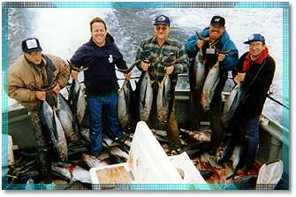
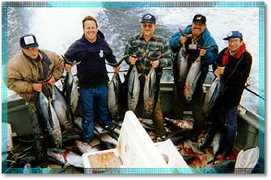
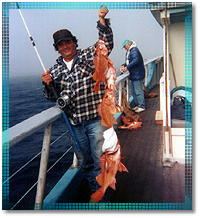
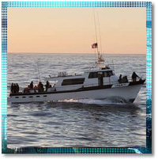
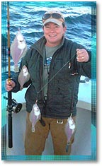

WE ARE OPEN FOR FISHING TRIPS!
|
|
 

|
|
The Monterey Bay offers a diversity of fish all year round. Our feature fishing trips are for sand dab, salmon, cod, and albacore. Details are further down on the page, so keep reading! Details on equipment rentals and prices can be found at the bottom of this page. Bait included in your fare. If you do not see a trip on a specific date you are looking for on our online ticketing page, please call us at 831-427-2334.
|
|  |
Santa Cruz Deep Sea Cod Fishing Trip (approx. 7 hours) Spend a relaxing day on the beautiful Monterey Bay, fishing for Snapper or one of the many species of Cod that inhabit our local waters. This popular trip will surely yield plenty for the frying pan. Whether you're a beginner or an old pro, our courteous crews will make your day both fun and memorable.
Season: Deep Sea 2024: April/October & December.
Santa Cruz Deep Sea Half Day Cod Fishing Trip (5 hours) A shorter version of our Deep Sea 7-hour Cod trip.
Season: 2024: April, October & December |
|  |
Nearshore 6-hour Rock Cod Trip
NEW 2024! A longer version of our Half Day nearshore fishing trip!
Season: May through September & November (2024)
Adults...$100.
Season: May through September & November (2024)
|
|
North Coast Deep Sea Cod - Full Day
Season: late-June through October
Adults...$139.00
Santa Cruz Nearshore Half Day Cod Fishing Trip (4.5 hours)
Season: May through September Check-in and Return times for our Cod trips vary! Please check the schedule online or call us at 831-427-2334, to verify times. |
|

The fish that fishermen love to eat!
These small but tasty flatfish/flounder are known by
locals as one of the
best eating fish in the ocean. Season: (Usually January-March)
|
|
Santa Cruz Albacore Fishing Trip These fast swimming world wide touring fish sometimes come within reach of our boats in the fall months. If a good fight is what you're looking for, then Albacore fishing is for you! Season: July through November
Phone: (831) 427-2334
|
Rentals and Gear
Rod & Reel Rental....$16.00 / Half Day Cod, Twilight Trips & Sand Dab $14.00
Purchase Tackle Kit....$9.00
1 Day Fishing License....$20.26 (2024)
- Gratuities/Tips for crew are not included in prices. For parties of 8 or more on public trips we will collect a 10% gratuity at check-in. Smaller groups can pay on the boat.
- Expert fish cleaning available. (Est. $5-20)
- All trips go rain or shine. All prices include city taxes. Starting June 1st, 2023, a $2 Port District fee will be assessed per passenger, on all public and private charters. Prices subject to change.
- Visa/MasterCard/American Express accepted.
All fishermen must check-in at the office at 1718 BROMMER ST, Santa Cruz at least 45-60 minutes before departure. The boats are located on "F" Dock in the West Santa Cruz Yacht Harbor.
BOOK YOUR TRIP TODAYCALL 831-427-0230 or email us at info@stagnaros.com. |
|
|
Copyright © 2000-2023 Stagnaros. All Rights Reserved
R & D Web...Dynamic Website Creation